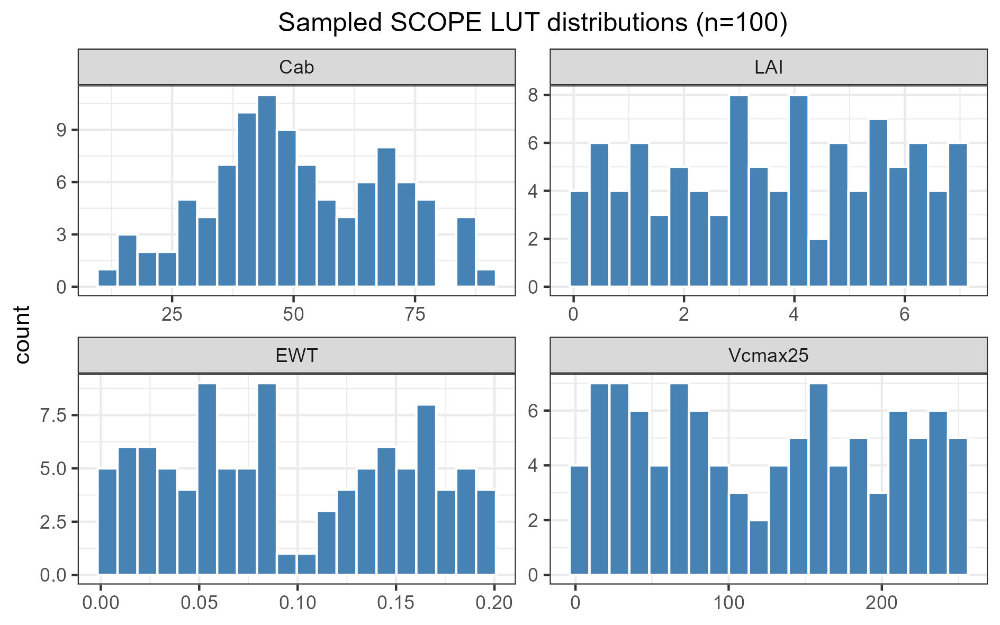
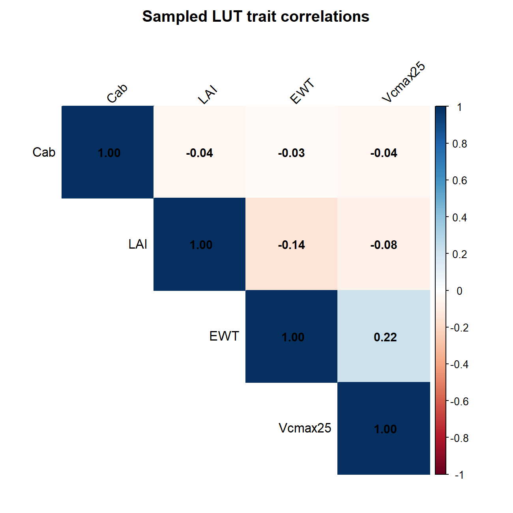
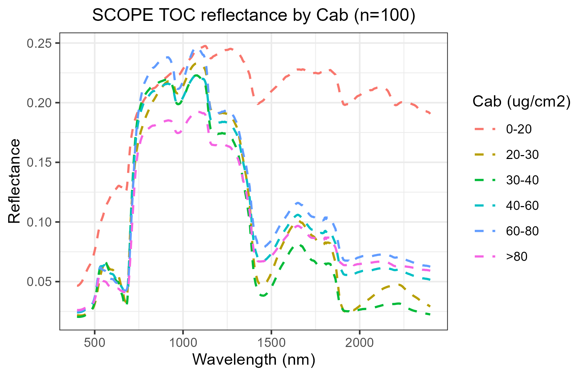
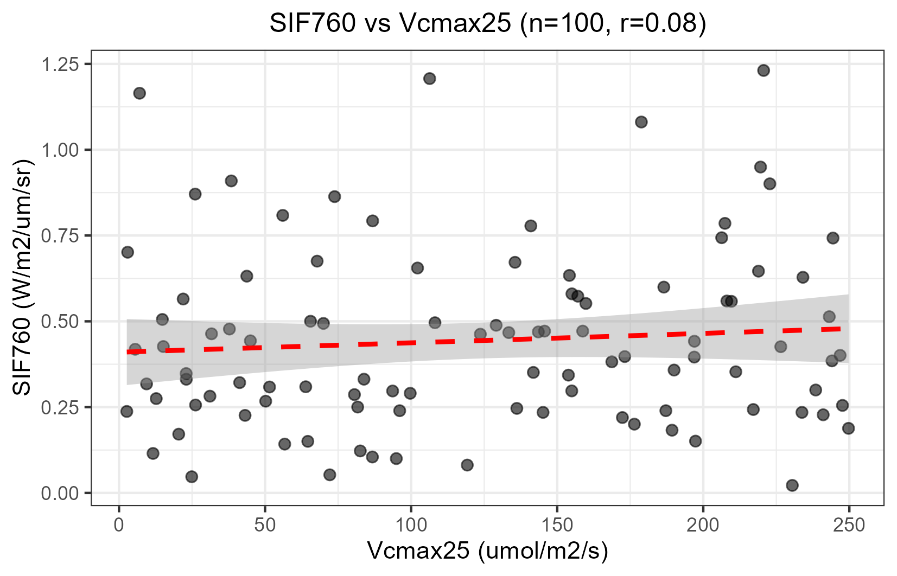
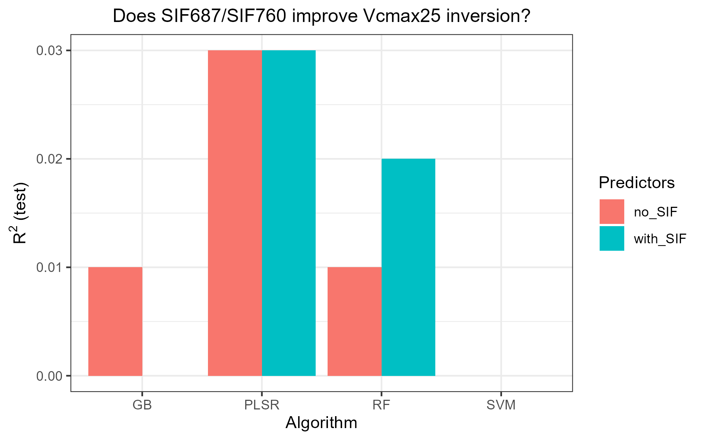
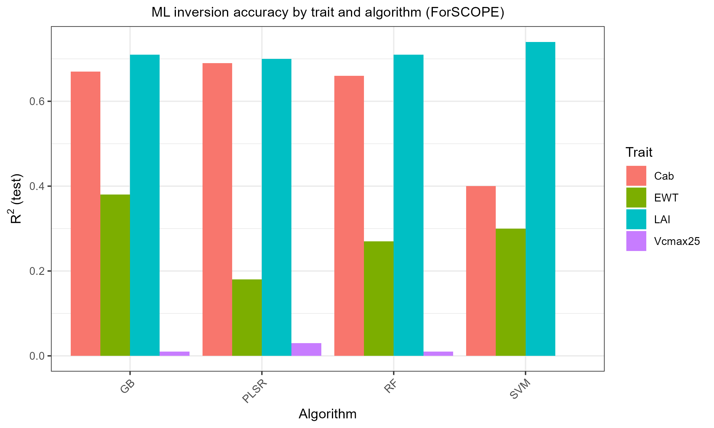
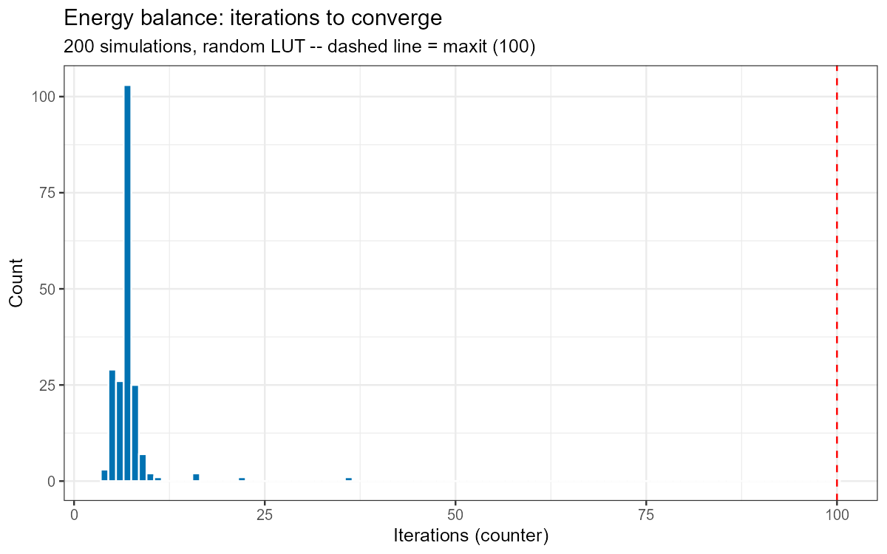
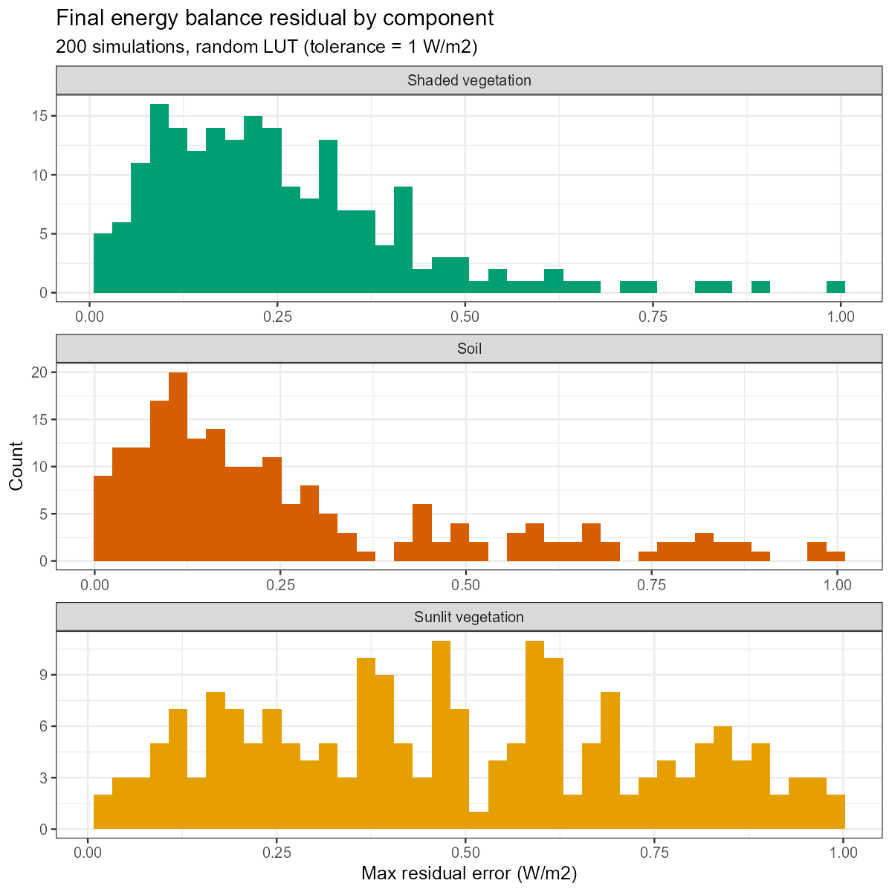

SCOPE course pipeline: energy balance, fluorescence, and trait inversion
scope-pipeline.RmdScripts/R/ForSCOPE/ is the SCOPEinR counterpart to
ToolsRTM’s ForPROSAIL course pipeline (see that package’s
course-pipeline article for the general pattern) – with one
addition: SCOPE runs the full Soil-Canopy-Observation, Photochemistry
and Energy-balance model, so it also produces chlorophyll fluorescence
(SIF) and can target Vcmax25 (maximum carboxylation rate),
not just leaf/canopy optical traits.
if (!requireNamespace("ToolsRTM", quietly = TRUE)) remotes::install_gitlab("caminoccg/toolsrtm")
if (!requireNamespace("SCOPEinR", quietly = TRUE)) remotes::install_gitlab("caminoccg/scopeinr")
library(ToolsRTM); library(SCOPEinR)
source("Scripts/R/ForSCOPE/3-simulate_LUT.R") # ~100 SCOPE runs, several minutes
source("Scripts/R/ForSCOPE/4-inversion_ML.R") # Cab/LAI/EWT/Vcmax25 x 11 algorithms + a SIF experiment
source("Scripts/R/ForSCOPE/5-inversion_DL.R")Unlike the optical-only models, get.SCOPE()’s
leaf.model/canopy.model arguments are
not functional – SCOPE always runs its own integral
multi-layer Fluspect-Cx + RTMo (verified directly in
Scripts/R/Comparison/compare_SCOPE_models.R, not just
documented). There is one leaf/canopy configuration, not a choice to
expose here.
1. Simulate
Same shape as the ToolsRTM course scripts: build a LUT via
getLUT.SCOPE(), run get.SCOPE() row-by-row
(wrapped in tryCatch – one row with an extreme random
parameter combination can otherwise crash the whole batch with no
R-level error, a native/numerical fault rather than a catchable
stop()), convolve to sensors, compute indices, save
diagnostics.



2. Solar-induced fluorescence (SIF)
calc_fluorescence=1 is on by default in
setoptions.csv, so every SCOPE run already computes
fluorescence radiance (data.rad$LoF_, over
data.spectral$wlF, roughly 640-850nm).
3-simulate_LUT.R extracts the two classic single-band SIF
metrics, SIF687 and SIF760, as extra LUT columns.
3. Does SIF predict Vcmax25? A real experiment, not just a discussion
Photosynthetic electron transport is directly linked to fluorescence
emission – in principle, SIF should carry information about
photosynthetic capacity (Vcmax25) beyond what reflectance
alone captures. 4-inversion_ML.R tests this directly: it
inverts Vcmax25 twice, once from reflectance+indices alone
and once with SIF687/SIF760 added, across 4 algorithms.


Honest result: no. R² stays at 0.00-0.03 whether or not SIF is included. Worth understanding why, since it’s not that “SIF doesn’t work” –

Cab and LAI invert reasonably (R²=0.66-0.74), EWT modestly
(0.18-0.38), but Vcmax25 is barely predictable from
anything here, SIF included. The root cause:
getLUT.SCOPE() samples Vcmax25 fully
independently of Cab/leaf nitrogen/everything else. In real
leaves, Vcmax correlates with nitrogen and chlorophyll content – and
that correlation is exactly what real SIF-Vcmax remote-sensing studies
rely on as their proxy signal. Sampled at random here, there’s no such
signal for any method, SIF or otherwise, to find. If you want a
fair test of the SIF-Vcmax hypothesis, correlate Vcmax25
with Cab first (the same correlatedValue()
mechanism ForPROSAIL uses for
Car~Cab) before re-running this
comparison.
4. Energy balance convergence
Scripts/R/ForSCOPE/6-validate_ebal_convergence.R runs
many randomized SCOPE simulations and records how many iterations the
energy-balance solver took to converge, and the residual error per
component (sunlit vegetation, shaded vegetation, soil) – a
numerical-stability check, not a trait-retrieval one.


200/200 simulations converged (100%), median 7 iterations, residuals well under 1 W/m² for every component.
Where to go next
-
ToolsRTM’s
course-pipelinearticle for the optical-only models (fourSAIL, foursail2, INFORM, SPART, MARMIT) this pipeline mirrors. -
Scripts/R/ForSCOPE/1-getSCOPE.R,1-getSCOPE-v3_withChunck.R,2-Explore_outputsSCOPE.R– lower-level teaching scripts coveringget.SCOPE()/get.SCOPE.parallel()directly, and how to explore SCOPE’s own multi-part output structure (data.rad,data.fluxes,data.canopy, etc).